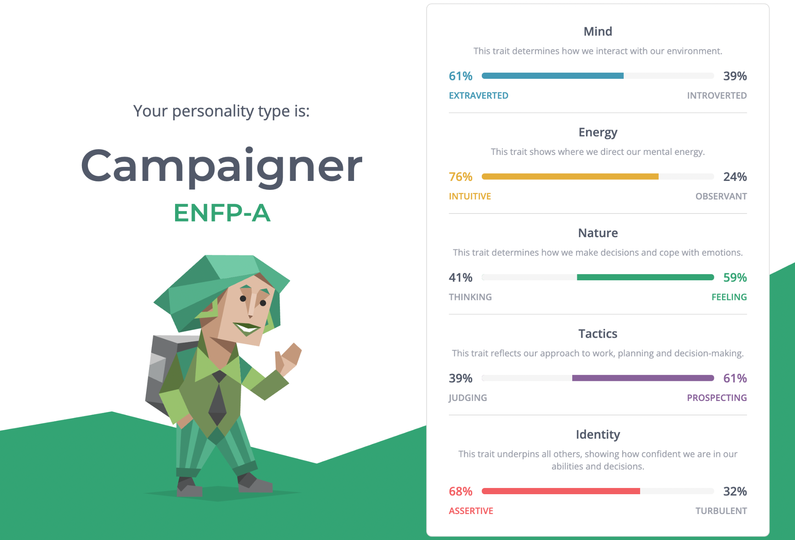
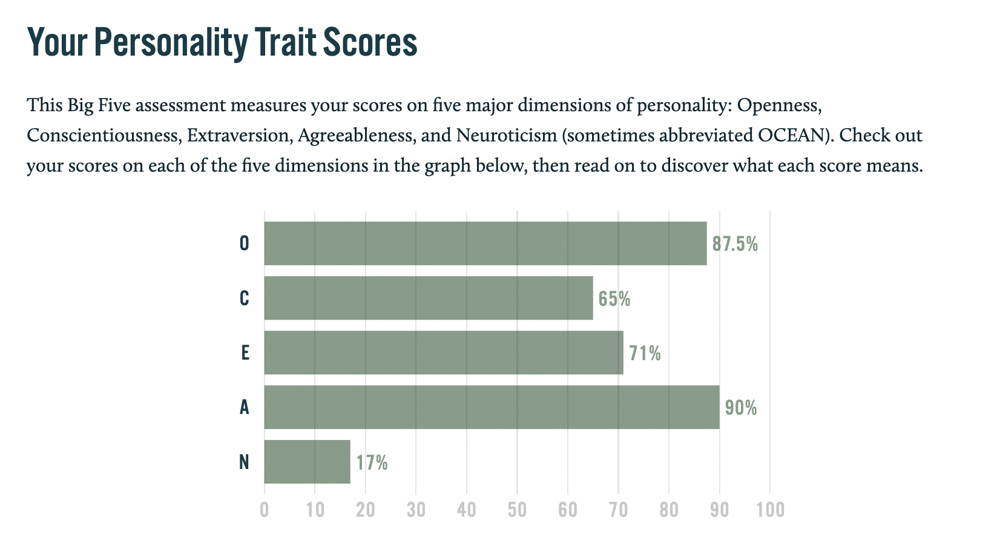
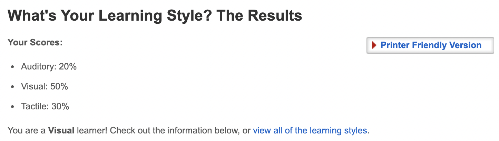

Nguyen Thu Thuy (Project Manager)

 My name is Nguyen Thu Thuy, my student number is s3870273 and I am the project manager in the team. I am a Digital Marketing major and this is my fifth semester at RMIT. My hobbies include reading, painting, and writing stories. I like coding although I am still in the learning stage but I am familiar with Python and a little bit of other coding languages.
My name is Nguyen Thu Thuy, my student number is s3870273 and I am the project manager in the team. I am a Digital Marketing major and this is my fifth semester at RMIT. My hobbies include reading, painting, and writing stories. I like coding although I am still in the learning stage but I am familiar with Python and a little bit of other coding languages.
- 
The famous Myers-Briggs test convinced me that I am a campaigner, specifically ENFP-A. That means that I am more extroverted and intuitive, and my nature involves more feelings and my type leans towards prospecting. While being quite indecisive, I am assertive with my identity which makes me more confident in my abilities. The second test about the learning style shows that I am a visual learner. The last test was one I chose, the Big Five Personality test, which granted me four factors with an average of 78% (Openness, Conscientiousness, Extraversion and Agreeableness) and one - Neuroticism - with 17% meaning that I do not often feel negative emotions such as anger, anxiety, emotional instability, etc.
In a group, I prefer as little drama as possible and work professionally and responsibly. I like people with the same outlook and values as me. But no matter how much I dislike my group, I will never be irresponsible with my work. If my team makes me uncomfortable personally or comes in with insults, I will request to switch teams or find ways to make both me and others comfortable. I really do not appreciate disrespect.
I already have a team for this class despite not knowing anyone beforehand. One of the members has made a discussion post aiming for a high grade in this course. I believe I have the skills to achieve the same, so I texted them and we have formed our group of four. My teammates are very forward-looking and nice.